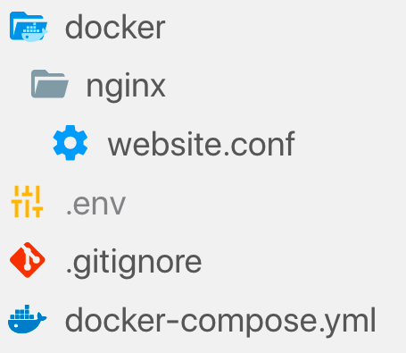
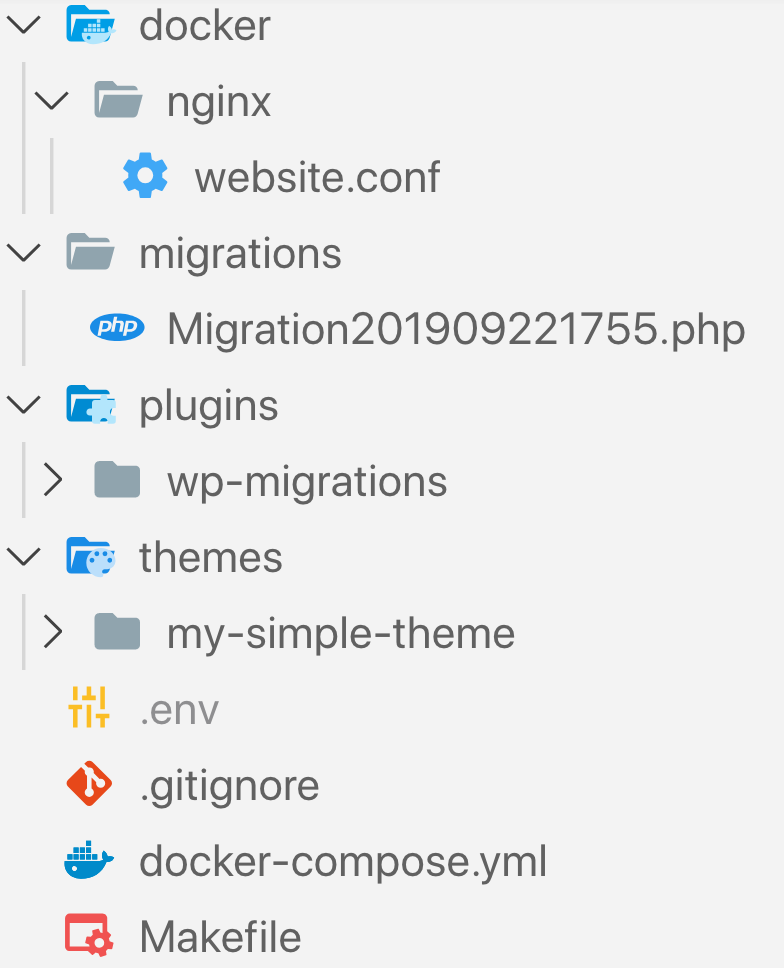

Michaël Perrin
- Full-stack developer
-
PHP / Symfony, React, Elasticsearch, …
and WordPress
- michael_perrin
- #paris #houston #hiking #belgianbeers #…
A typical WordPress set-up
aka. the "Famous 5-minute install"


What are we going to automate?
- Infrastructure setup.
- WordPress configuration.
- WordPress data.
Benefits of automation
Why do we want to automate things?
Because developers are lazy? 🤔
- Multi-environments (staging, QA, production, …)
-
Server configuration consistency.
- Avoids « It works on my machine ¯\_(ツ)_/¯ ».
- Easy versioning of the project.
- Continuous Integration and Deployment.
- Streamline team work.
- Faster and predictable deployments.
- "Cloud-ready".
Quick introduction on Docker
- "Lightweight virtualisation".
- Each service runs in a separate Docker container.
-
Many services already have official images.


- Rule of thumb: one service per container.
- Works on Linux, Windows, MacOS.

Docker: benefits
- Very handy for local development and for servers.
- Documents and versions the infrastructure of the project.
- Allows to install any version of any dependency.
- Isolation of projects.
.env file
MYSQL_ROOT_PASSWORD=my_root_password
MYSQL_DATABASE=wordpress
MYSQL_USER=wordpress
MYSQL_USER_PASSWORD=wordpress_pwd
WEBSERVER_PORT=8000
Environment variables
-
Specific to an environment. Examples:
- Database parameters
- Website URLs (eg. root URL of the website, API endpoint, etc.)
- Email recipients
- May contain sensitive data.
-
Can be set in:
- A
.envfile - In CI/CD tools like Travis, TeamCity, etc.
- A
- Not commited in the project.
Project structure
Let's run it
One command to start Docker containers:docker-compose up -dUp and running:
+
What we get
- Not error prone (clicks are...human)
- Fast
- Consistent configuration (same exact PHP / MySQL versions)
- Versioned infrastructure.
- Easy to update configuration for all environmnents.
- Easy to deploy to any hosting providers.
- Easy to deploy to reproduce (integrated into a CI/CD).
- and... one command to setup the project.
Automate WordPress configuration
Ditch the wizard
- Set the language.
- Add default admin user.
- Configure database parameters.
- Define posts URL structure.
- Choose a theme.
- Install plugins.
WP-CLI
WP-CLI provides a command-line interface for many actions you might perform in the WordPress admin.
Useful WP-CLI commands
Generate a wp-config.php file with DB parameters:
wp-cli config create --dbhost=… --dbname=… <...>
Run the standard WordPress installation process:
wp-cli core install --url=… --title=…
Install and activate plugins:
wp-cli plugin install contact-form-7 --activate
wp-cli plugin install advanced-custom-fields --activate
Making use of WP-CLI
Updatedocker-compose.yml:
toolbox:
image: michaelperrin/wordpress-toolbox
volumes:
- wordpress_data:/wordpress
- ./Makefile:/scripts/Makefile
depends_on:
- database
environment:
MYSQL_HOST: ${MYSQL_HOST}
MYSQL_DATABASE: ${MYSQL_DATABASE}
MYSQL_USER: ${MYSQL_USER}
MYSQL_USER_PASSWORD: ${MYSQL_USER_PASSWORD}
WORDPRESS_ADMIN_EMAIL: ${WORDPRESS_ADMIN_EMAIL}
WORDPRESS_ADMIN_PASSWORD: ${WORDPRESS_ADMIN_PASSWORD}
WORDPRESS_ADMIN_USER: ${WORDPRESS_ADMIN_USERNAME}
WORDPRESS_DOMAIN_NAME: ${WORDPRESS_DOMAIN_NAME}
WORDPRESS_WEBSITE_URL: ${WORDPRESS_WEBSITE_URL}
WORDPRESS_LOCALE: en_US
WORDPRESS_WEBSITE_POST_URL_STRUCTURE: "/%year%/%monthnum%/%day%/%postname%/"
WORDPRESS_WEBSITE_TITLE: "My beautiful website"
Automate data changes
- Add page
- Add menu entries
- Create user (? TO CHECK)
-
Configure a plugin
- Add a contact form (Contact Form 7)
- Define MailChimp API key
- Create a contact form (no clicks again)
WP-migrations plugin
- Inspired by Doctrine Migrations for PHP and SQL
- Runs user-defined migration files to describe data changes.
- Embeds a WP-CLI command to execute migrations.
Migration files
- Stored in
wp-content/migrationsfolder. - Only executed once.
- Should be committed to version control.
Example
class Migration201909221755 implements MigrationInterface {
use MigrationUtilitiesTrait;
public function execute() {
$pageData = [
'post_name' => 'about', // Permalink
'post_title' => 'About us',
'post_content' => '',
'post_status' => 'publish',
'post_author' => 1,
'post_type' => 'page',
'menu_order' => 1,
];
$postId = wp_insert_post($pageData);
$this->addToMenu($postId, 'Contact');
}
}
Run the migrations
make wordpress_migrations_executeRun the migrations, again
make wordpress_migrations_executeBenefits of migrations
- Structural changes are versioned.
-
Facilitate team work and easy to deploy.
- No "in-between" state
- Multi-environments (use env variable in migrations with
getenv()!)
- Makes project work .
Downside: more work to do upfront
Final tree structure

- Only what our project needs.
- Easy versioning.
- Includes infrastructure & all automations.
Thank you
- Twitter: @michael_perrin
- Demo repository: https://github.com/michaelperrin/automated-wordpress-demo